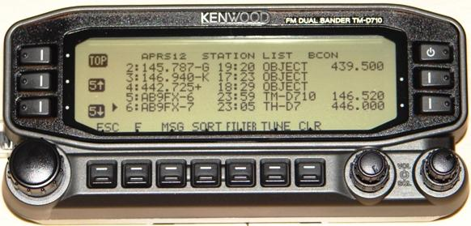

Awareness for your Shuttle Audio, RAIN Report, Newsline, or ARRL Audio News Broadcasts
You Volunteers work hard to bring these Amateur Radio Reports to your fellow hams.
You advertise, announce, and encourage listeners. But while your
program is being played on your repeaters, maybe only a few of the actual
mobile operators on the air at that time will hear it because only
a few of them remember the FREQUENCY and TIME that your report is being
played in your area.
 You need a REAL-TIME bulletin that goes to all mobile operators independent of what
repeater they are currently monitoring. The D7 HT APRS display shown to the right is
showing the locally recommended frequency for travelers, the tone and
range and weekly net times. You need something like this for your program!
You need a REAL-TIME bulletin that goes to all mobile operators independent of what
repeater they are currently monitoring. The D7 HT APRS display shown to the right is
showing the locally recommended frequency for travelers, the tone and
range and weekly net times. You need something like this for your program!
Providing REAL-TIME information to other operators is what APRS is all about!
See details.
Beacon on APRS: While your report is on the air, you need to be
beaconing a real-time APRS object showing the event on the front panel
of all APRS mobile radios in the area. This object shows the frequency,
location, and time of the report. You transmit it once a minute for the
duration of your program and then drop back to a 30 minute rate all the
rest of the time to help them remember the next week's report.

This way, a new mobile on the air is never more than 1 minute away from
being alerted in real time to your activity. Similar to what you see in the
image to the right, the radio can display the following attributes on the
front panel:
The Title of the program
The Frequency
The Weekly time
Any other information about your local program
If the operator clicks on that item on his radio, then he will also see
your callsign as the originator, the date and time, the direction and
distance of your repeater from his location.
FORMATTING YOUR BEACON: You can do this with no special software
and nothting but an old TNC and radio. Just dust off your old packet TNC
and program the beacon using Hyperterm. Connect the TNC to a low power
radio suitable for hitting the local APRS digipeater on 144.39 MHz(USA).
Then set the following settings:
BTEXT ;NET-NAME-*111111zDDMM.--NXDDDMM.--WcFFF.FFFMHz DAY-TIME- other text...
UNPRO APRS VIA WIDE1-1
B E 180
Where the NET-NAME- must be 9 bytes
Where the LAT/LONG must be as shown but with two spaces in place of "--"
Where the X bytes between the LAT and LONG represents your type of program (A,N,R, etc?)
Where the FFF.FFFMHz must be the first 10 bytes
Where the DAY-TIME- must be 10 bytes including the initial SPACE
Where all else is optional text.
Where UNPROTO is the packet path for local APRS
Where B E 180 means every 30 minutes in an old TAPR type TNC.
*** Change to "B E 6" for one-minute beacons during the program)
*** YOU must return to the low 30 minute rate after the event!
Here are several examples...
BTEXT ;NEWSLINE *111111zDDMM.--NNDDDMM.--WcFFF.FFFMHz Tue 930PM other text...
or ;RAIN-REPT*111111zDDMM.--NRDDDMM.--WcFFF.FFFMHz Wed 7 PM other text...
or ;ARRL-REPT*111111zDDMM.--NADDDMM.--WcFFF.FFFMHz Th 9:30PM other text...
or ;ISS-AUDIO*111111zDDMM.--NIDDDMM.--WcFFF.FFFMHz On theAIR other text...
or ;CLUB-NET *111111zDDMM.--NNDDDMM.--WcFFF.FFFMHz Sun 1030P other text...

TUNING IT IN: . In New APRS radios (the D710 shown above) there is a TUNE Button
to allow one button tuning to any of these objects that contain frequency in the
APRS standard format. In the example above, the 5th station is selected, and pressing
the TUNE button will take the radio to the 446.000 MHz frequency. Notice that there
are two formats for APRS frequency in objects. The first 3 objects actually use the
frequency as the name of the object. These are used to represent the locally
recommended voice repeater in any given APRS area. But for your audio report,
the name of the object should be Newsline, RAIN or
ARRL report as necessary to catch the eye. Then the frequency is included in the
OBJECT text as in the examples #4 and #5 above. Please see the APRS
localinfo initiative.
Note. I used stock photos here for the examples since no one has sent in any
photos yet of their Audio Report Objects to show to others. Once yours is on
the air, please confirm it is properly formatted by looking at it on the
display of an APRS D7, D7XX or HAMHUD display.
SHUTTLE RETRANSMISSIONS:
You can automate this APRS object by simply connecting a TNC and radio on 144.39.
and running the External Carrier Detect (XCD) input to the TNC over to the PTT
line of the Shuttle Retransmission Transmiter PTT line. Whenever that transmitter
is keyed, it released the external hold off of the TNC beacons, and those
one minute beacons begin to be transmitted (in the local area only) as long
as there is Shuttle Audio. A great way to alert mobiles that your retransmission
system is active.
CONCLUSION: . It Pays to Advertise. This serving of local real-time
information of immediate use to the mobile operator in a local area is the original
purpose of APRS. If you are only thinking of APRS as a vehicle tracking system,
then you have been mislead. APRS is a two-way infromation distribution system.
It was never intended as just a vehicle tracking system. Please see:
The Main APRS Page
All the Misconceptions about APRS page.
Bob, WB4APR